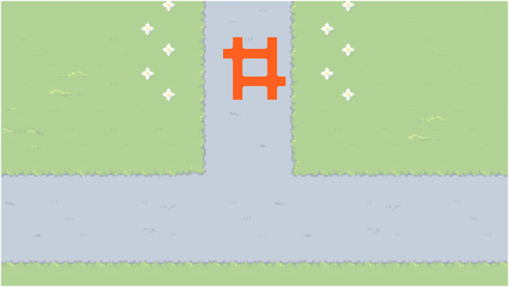

게임을 플레이하는 당신은 안전맨이 됩니다!
안전맨의 임무는 마을 곳곳에 숨은 위험을 찾아내어 신고하는 것이에요.
마을을 둘러보시다가 사고를 유발할 수 있는 위험 요소를 발견하시면,
스페이스바를 눌러 신고하고 안전한 세상을 만들어주세요!


SPACE BAR
신고하기

야호~ 안전한 세상을 만들었어!
일상 생활 속에서 자주 일어날 수 있는 일들이니
앞으로도 조심히 주변을 둘러보고 주의하며 다니길 바라!